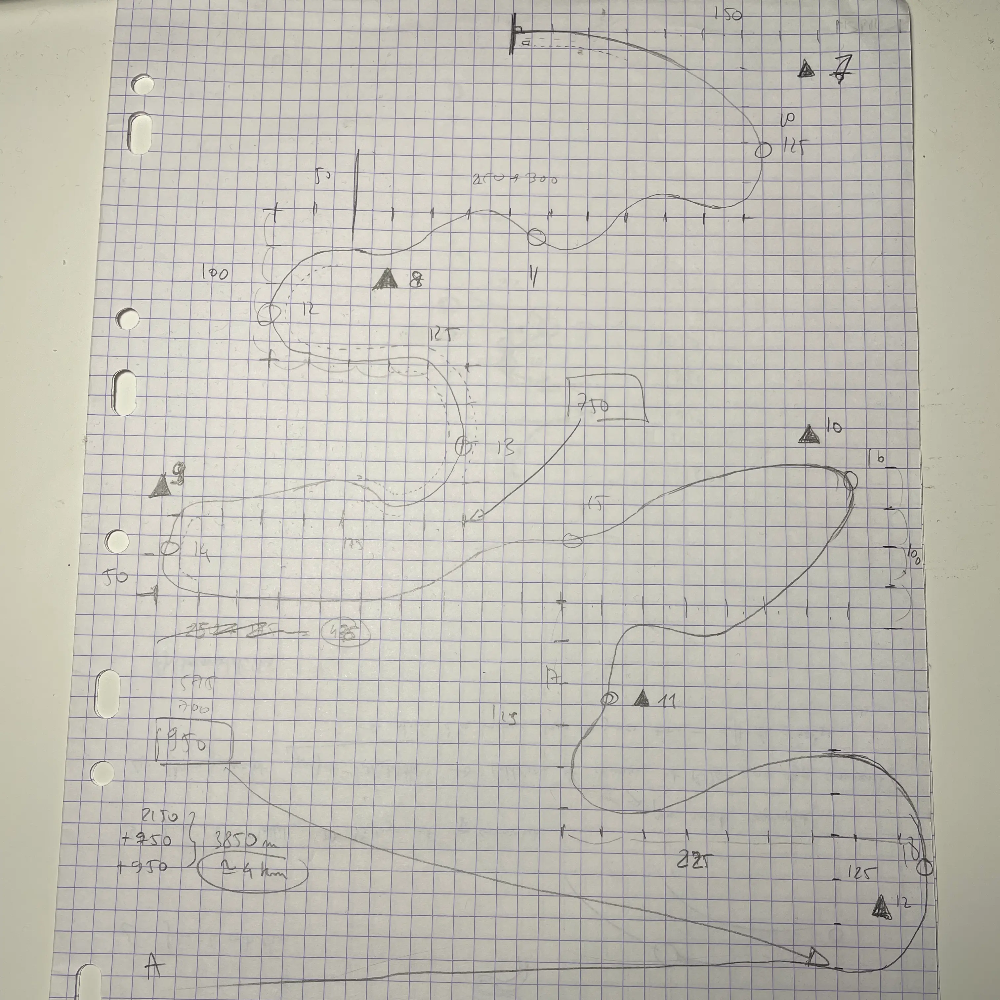

Better Late than Basic
Description and project workflow.
Description
- Team of 9
- 4 days
- Master JMIN project assignment
- Unity, Git, Notion
Better Late Than Basic (BLTB) is a racing game mixing speed with style. Between mountains and city, rush through the sinuous circuit and collect as much pieces of tuning as possible to get to the first place with the best style.
Project workflow
In BLTB, I was in charge of the level design, while game design was made collaboratively with the whole team.
With the other game designer, we draw a layout of the circuit on paper, with metrics defined in collaboration with the 3D artists:
The PSX aesthetic already established, I thought about building the level with ProBuilder. It will however be used only in the final part, the city, while the rest will be built using splines. There is no official tool for splines in Unity 2021, so we used Sebastian Lague's plugin. This was not the best choice of tool, with regards to speed efficiency and workflow overall, and one of the 3D artist had to finish up the splines in Blender.
In regards to UX and design, BLTB lacks in some aspects, as there is no way to signal to the player they are going in the wrong way for example. Other than that, I'm still satisfied of how much we did in 4 days.